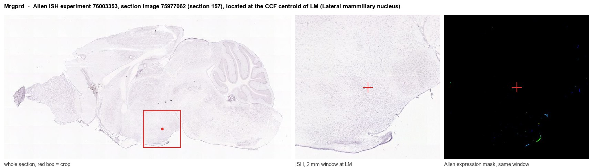
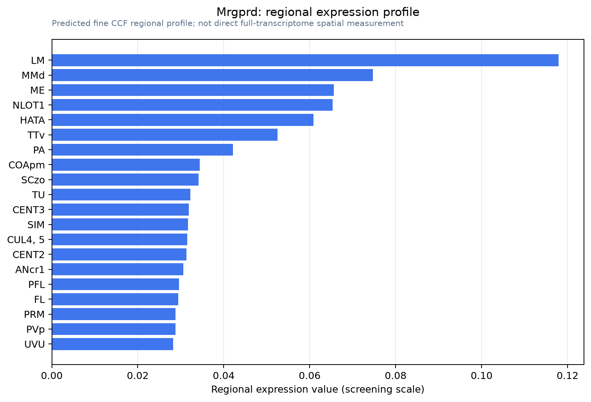

Mrgprd
Mas-related G protein-coupled receptor member D (Beta-alanine receptor) (G protein-coupled receptor TGR7)
Spatial tier: RESTRICTED · Class: GPCR · Top region: LM (Lateral mammillary nucleus) · Positive regions: 21/554
48.6Discovery Score
33.9Targetability Score
CEvidence grade C
What this means: Mrgprd: fine CCF profile is restricted toward LM (top regions: LM, MMd, ME, NLOT1, HATA; 21 positive regions); direct spatial validation is still required.
Function in LM: evidence, prediction, innovation
- Gene function
- MRGPRD is a Mas-related G-protein-coupled receptor activated by the amino acid beta-alanine, signalling through Gq and Gi. In mouse it is the defining marker of the non-peptidergic, IB4-binding class of C-fibre nociceptors, which innervate the epidermis exclusively and are required for normal mechanical pain sensitivity and for beta-alanine-evoked itch.
- Region function
- The lateral mammillary nucleus is the mammillary head-direction relay: it receives vestibular information via the dorsal tegmental nucleus and projects through the mammillothalamic tract to the anterodorsal thalamus, generating the earliest directional-heading signal in the Papez circuit.
- Published in this region
- inferred No region-specific literature found. Mrgprd expression has been validated only in a discrete subset of dorsal root and trigeminal ganglion nociceptors, where Zylka et al. 2005 used targeted axonal tracers to define their epidermal circuits and Cavanaugh et al. 2009 showed they mediate mechanical but not thermal nociception; no central neuronal expression has been confirmed in any species.
- Predicted function
- Prediction: a genuine MRGPRD signal in the lateral mammillary nucleus would most plausibly indicate a small Gq-coupled population in which beta-alanine or a related metabolite acts as a slow neuromodulator raising excitability in head-direction relay cells, linking metabolic amino-acid status to vestibular signal gain. Local beta-alanine infusion or chemogenetic activation of Mrgprd-CreERT2 cells in LM is predicted to increase firing rate and destabilise head-direction tuning during passive rotation, while Mrgprd-DTR-mediated ablation should have no effect on peripheral touch but may reduce spatial-orientation accuracy; verifying the transcript by RNAscope is the necessary first step, since the prior probability of a true central signal is low.
- Innovation
- ★★★★☆ 4/5 Excellent mouse genetic tools exist and the finding would be genuinely surprising, but MRGPRD is so firmly established as a DRG-restricted gene that the mapped signal may well be noise.
- Tools
- Mrgprd-EGFPf, Mrgprd-CreERT2 and Mrgprd-DTR mice (Zylka lab); beta-alanine as agonist; MRGPRD antagonists are limited; anti-MRGPRD antibodies are poorly validated; RNAscope with the Mrgprd probe is the appropriate verification assay.
- References
Direct evidence located at the region

Allen ISH experiment 76003353, section image 75977062 (section 157): the section that contains the CCF centroid of Lateral mammillary nucleus according to the Allen image-to-atlas alignment (reference_to_image), with a 2 mm window around that point. Left: whole section, red box = window. Middle: ISH signal. Right: Allen's expression-mask view of the same window. open this image in the Allen viewer
Look it up yourself: Allen Mouse Brain ISH for MrgprdAllen reference atlas: LM (structure 210)ABC Atlas MERFISH viewer(in the ABC Atlas choose dataset MERFISH-C57BL6J-638850-CCF, colour cells by gene "Mrgprd" or by parcellation_substructure "LM")All genes confined to LM + 3-D brain
Direct spatial evidence
MERFISH REGION LOCATOR

Regional expression figure

Predicted WMB × fine-CCF profile; not direct full-transcriptome spatial measurement.
Spatial profile
Evidence and specificity
- Evidence status
- PREDICTED_FINE
- Direct sources
- None; predicted localization only
- Exclusive threshold
- 12 positive regions out of 554
- Spatial specificity
- 0.310
- Top-region fraction
- 0.068
- Filter status
- PASS
Interpretation limits
- Cell-type-to-region projection is imputed expression, not direct spatial measurement.
- Adult reference atlases do not establish stability across age, sex, strain, state, or disease.
- Transcript abundance does not guarantee protein abundance or genetic-tool performance.